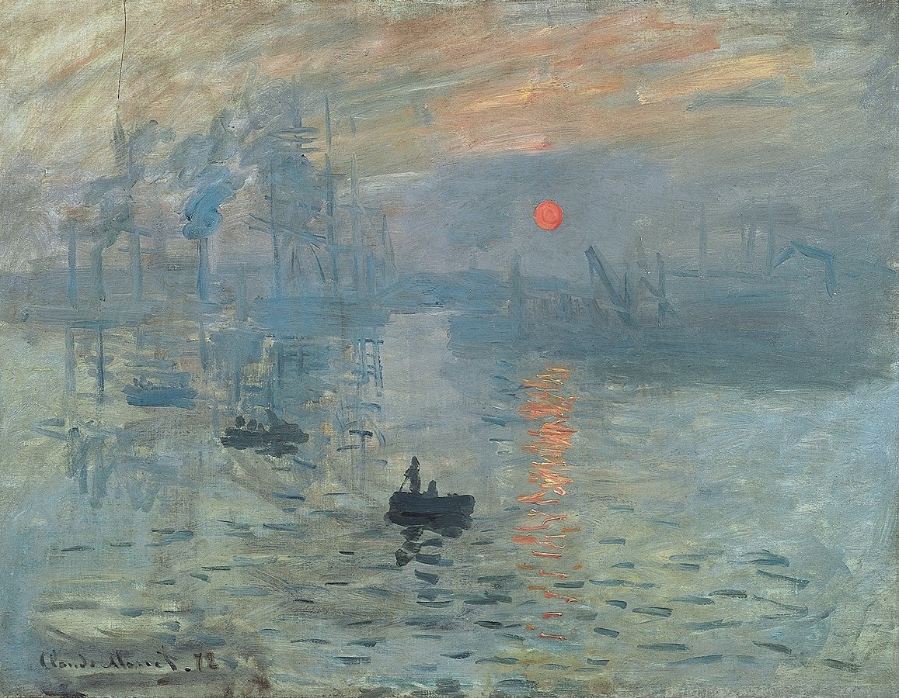
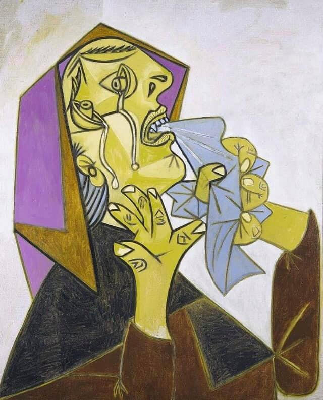

Uebsite per Piktura sipas Periudhave te Artit (UPPA)
Na vjen keq, shfletuesi juaj nuk mbështet SVG inline.
Ballina
Piktura
Kontakti
Impresionizmi

Piktori:
Claude Monet
Emri i Piktures:
Lindja e diellit(1872)
Vendi:
Muzeu Marmottan i Monet,Paris
Piktori:
Alfred Sisley
Emri i Piktures:
Rruga e Pemëve të Gështenjave pranë La Celle-Saint-Cloud(1865)
Vendi:
Petit Palais, Paris
Shfletuesi juaj nuk e mbështet elementin audio.
Fillo-Ndalo
Kubizmi

Piktori:
Pablo Picasso
Emri i Piktures:
Koke gruaje duke vajtuar me shami,(1937)
Vendi:
Malaga, Spanje
Piktori:
Ibrahim Kodra
Emri i Piktures:
Mësimi i Muzikës,(1997)
Vendi:
Teatri Masino
Forma per kontakt
Mesazhi
iron man 3 123movies